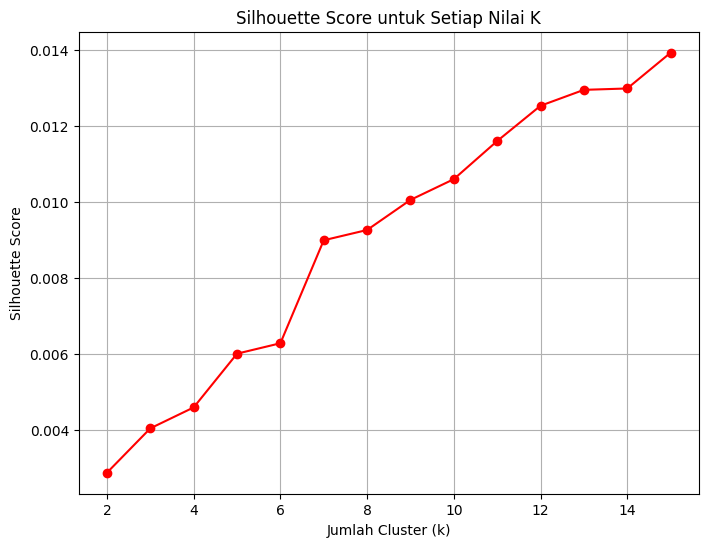

klastering email#
!pip install plotly
Requirement already satisfied: plotly in /home/codespace/.local/lib/python3.12/site-packages (6.2.0)
Requirement already satisfied: narwhals>=1.15.1 in /home/codespace/.local/lib/python3.12/site-packages (from plotly) (1.46.0)
Requirement already satisfied: packaging in /home/codespace/.local/lib/python3.12/site-packages (from plotly) (25.0)
[notice] A new release of pip is available: 25.1.1 -> 25.3
[notice] To update, run: python3 -m pip install --upgrade pip
!pip install -q nltk contractions emoji pyspellchecker Sastrawi
[notice] A new release of pip is available: 25.1.1 -> 25.3
[notice] To update, run: python3 -m pip install --upgrade pip
!pip install gensim
Requirement already satisfied: gensim in /usr/local/python/3.12.1/lib/python3.12/site-packages (4.3.3)
Requirement already satisfied: numpy<2.0,>=1.18.5 in /usr/local/python/3.12.1/lib/python3.12/site-packages (from gensim) (1.26.4)
Requirement already satisfied: scipy<1.14.0,>=1.7.0 in /usr/local/python/3.12.1/lib/python3.12/site-packages (from gensim) (1.13.1)
Requirement already satisfied: smart-open>=1.8.1 in /usr/local/python/3.12.1/lib/python3.12/site-packages (from gensim) (7.3.1)
Requirement already satisfied: wrapt in /usr/local/python/3.12.1/lib/python3.12/site-packages (from smart-open>=1.8.1->gensim) (1.17.3)
[notice] A new release of pip is available: 25.1.1 -> 25.3
[notice] To update, run: python3 -m pip install --upgrade pip
import re
import sys
import time
import string
import warnings
from collections import Counter
import pandas as pd
import numpy as np
import nltk
from nltk.tokenize import word_tokenize
from nltk.corpus import stopwords
from nltk.stem import PorterStemmer, WordNetLemmatizer
from Sastrawi.Stemmer.StemmerFactory import StemmerFactory
from spellchecker import SpellChecker
import contractions
import emoji
from gensim.models import Word2Vec, FastText
from gensim import corpora, models
from gensim.models import LdaModel
from gensim.models.coherencemodel import CoherenceModel
from sklearn.decomposition import PCA
from sklearn.feature_extraction.text import TfidfVectorizer
import requests
from bs4 import BeautifulSoup
import matplotlib.pyplot as plt
import plotly.graph_objects as go
from tqdm import tqdm
warnings.filterwarnings('ignore')
nltk.download("punkt")
nltk.download("punkt_tab")
# Download stopwords
nltk.download('stopwords')
[nltk_data] Downloading package punkt to /home/codespace/nltk_data...
[nltk_data] Package punkt is already up-to-date!
[nltk_data] Downloading package punkt_tab to
[nltk_data] /home/codespace/nltk_data...
[nltk_data] Package punkt_tab is already up-to-date!
[nltk_data] Downloading package stopwords to
[nltk_data] /home/codespace/nltk_data...
[nltk_data] Package stopwords is already up-to-date!
True
berita = pd.read_csv("spam.csv", dtype=str, encoding="utf-8", encoding_errors="ignore").fillna("")
berita.head()
| id | Text | Unnamed: 2 | Unnamed: 3 | Unnamed: 4 | |
|---|---|---|---|---|---|
| 0 | 1 | Go until jurong point, crazy.. Available only ... | |||
| 1 | 2 | Ok lar... Joking wif u oni... | |||
| 2 | 3 | Free entry in 2 a wkly comp to win FA Cup fina... | |||
| 3 | 4 | U dun say so early hor... U c already then say... | |||
| 4 | 5 | Nah I don't think he goes to usf, he lives aro... |
import string
def clean_text(text):
if not isinstance(text, str):
return ""
text = text.lower()
text = emoji.demojize(text)
text = re.sub(r'\d+', '', text)
text = text.translate(str.maketrans('', '', string.punctuation))
text = re.sub(r'\W', ' ', text)
text = BeautifulSoup(text, "html.parser").get_text()
text = re.sub(r'\s+', ' ', text).strip()
return text
df_raw = pd.read_csv(
"spam.csv",
header=None,
encoding="latin1",
on_bad_lines="skip"
)
# ambil hanya dua kolom pertama: id + text
df = pd.DataFrame({
"id": df_raw.iloc[:, 0],
"Text": df_raw.iloc[:, 1]
})
# hapus baris kosong
df = df.dropna(subset=["Text"])
df.head()
| id | Text | |
|---|---|---|
| 0 | id | Text |
| 1 | 1 | Go until jurong point, crazy.. Available only ... |
| 2 | 2 | Ok lar... Joking wif u oni... |
| 3 | 3 | Free entry in 2 a wkly comp to win FA Cup fina... |
| 4 | 4 | U dun say so early hor... U c already then say... |
df["Clean"] = df["Text"].apply(clean_text)
df.head()
| id | Text | Clean | |
|---|---|---|---|
| 0 | id | Text | text |
| 1 | 1 | Go until jurong point, crazy.. Available only ... | go until jurong point crazy available only in ... |
| 2 | 2 | Ok lar... Joking wif u oni... | ok lar joking wif u oni |
| 3 | 3 | Free entry in 2 a wkly comp to win FA Cup fina... | free entry in a wkly comp to win fa cup final ... |
| 4 | 4 | U dun say so early hor... U c already then say... | u dun say so early hor u c already then say |
tfidf = TfidfVectorizer(stop_words='english')
X = tfidf.fit_transform(df["Clean"])
X.shape
(5573, 8296)
df.to_csv("hasil_preprocessing_emailUTS.csv", index=False)
# Memuat Dataset
try:
df = pd.read_csv('hasil_preprocessing_emailUTS.csv')
print(f"\nDataset berhasil dimuat. Jumlah data: {len(df)} baris.")
print("Contoh data awal:")
print(df.head())
except FileNotFoundError:
print("\nError: File tidak ditemukan. Pastikan nama file CSV sudah benar.")
# Jika file tidak ditemukan, hentikan proses.
# df = pd.DataFrame()
Dataset berhasil dimuat. Jumlah data: 5573 baris.
Contoh data awal:
id Text \
0 id Text
1 1 Go until jurong point, crazy.. Available only ...
2 2 Ok lar... Joking wif u oni...
3 3 Free entry in 2 a wkly comp to win FA Cup fina...
4 4 U dun say so early hor... U c already then say...
Clean
0 text
1 go until jurong point crazy available only in ...
2 ok lar joking wif u oni
3 free entry in a wkly comp to win fa cup final ...
4 u dun say so early hor u c already then say
def safe_tokenize(text):
if not isinstance(text, str):
text = ""
return word_tokenize(text)
df['tokens'] = df['Clean'].apply(safe_tokenize)
print(f"Data bersih dimuat. Jumlah data: {len(df)} baris.")
Data bersih dimuat. Jumlah data: 5573 baris.
from gensim.corpora import Dictionary
from gensim.models import HdpModel, LdaMulticore
import time
import matplotlib.pyplot as plt
import numpy as np
from gensim.models.coherencemodel import CoherenceModel
# Pastikan tidak ada dokumen kosong
documents = [doc for doc in df['tokens'].tolist() if len(doc) > 0]
print(f"Jumlah dokumen valid: {len(documents)}")
# Buat dictionary
dictionary = Dictionary(documents)
# Filter extremes SESUAI dataset kecil
dictionary.filter_extremes(no_below=2, no_above=0.9)
# Buat corpus
corpus = [dictionary.doc2bow(doc) for doc in documents]
print(f"\nKamus dibuat. Jumlah kata unik setelah filter: {len(dictionary)}")
# ===== HDP untuk estimasi topik =====
print("\n--- Menjalankan HDP untuk estimasi jumlah topik... ---")
hdp_model = HdpModel(corpus=corpus, id2word=dictionary)
# Ambil topik yang non-empty
hdp_topics = hdp_model.print_topics()
estimated_num_topics = len(hdp_topics)
print(f"Perkiraan kasar jumlah topik dari HDP: {estimated_num_topics}")
# ===== CARI JUMLAH TOPIK TERBAIK =====
def compute_coherence_values(dictionary, corpus, texts, start, limit, step):
coherence_values = []
for num_topics in range(start, limit, step):
model = LdaMulticore(
corpus=corpus,
id2word=dictionary,
num_topics=num_topics,
passes=8,
random_state=42,
workers=1 # aman untuk semua device
)
coherencemodel = CoherenceModel(
model=model,
texts=texts,
dictionary=dictionary,
coherence='c_v'
)
coherence_values.append(coherencemodel.get_coherence())
print(f"Jumlah topik: {num_topics} | Koherensi: {coherence_values[-1]:.4f}")
return coherence_values
# Range pencarian disesuaikan data kecil
search_start = 2
search_limit = min(estimated_num_topics + 4, 15) # batas aman
search_step = 1
print(f"\nSearching topik dari {search_start} sampai {search_limit}...")
coherence_values = compute_coherence_values(
dictionary=dictionary,
corpus=corpus,
texts=documents,
start=search_start,
limit=search_limit,
step=search_step
)
x = range(search_start, search_limit, search_step)
# Plot
plt.figure(figsize=(10, 5))
plt.plot(x, coherence_values, marker='o')
plt.xlabel('Jumlah Topik')
plt.ylabel('Koherensi (c_v)')
plt.grid(True)
plt.title("Pencarian Jumlah Topik Optimal")
plt.show()
optimal_num_topics = x[np.argmax(coherence_values)]
print(f"\n🔥 Jumlah topik optimal: {optimal_num_topics}")
# ===== LDA FINAL =====
print("\n--- Melatih LDA final... ---")
lda_model = LdaMulticore(
corpus=corpus,
id2word=dictionary,
num_topics=optimal_num_topics,
passes=15,
random_state=42,
workers=1
)
print("\n--- Topik yang ditemukan ---")
for idx, topic in lda_model.print_topics(num_words=10):
print(f"\nTopik {idx}: {topic}")
# ===== EKSTRAK FITUR TOPIK =====
def get_lda_features(lda_model, bow_corpus, n_topics):
features = []
for doc_bow in bow_corpus:
dist = lda_model.get_document_topics(doc_bow, minimum_probability=0)
vector = [0.0] * n_topics
for topic_id, prob in dist:
vector[topic_id] = prob
features.append(vector)
return np.array(features)
X = get_lda_features(lda_model, corpus, optimal_num_topics)
print("\nEkstraksi fitur selesai!")
print(f"Bentuk matriks fitur X: {X.shape}")
Jumlah dokumen valid: 5570
Kamus dibuat. Jumlah kata unik setelah filter: 3904
--- Menjalankan HDP untuk estimasi jumlah topik... ---
Perkiraan kasar jumlah topik dari HDP: 20
Searching topik dari 2 sampai 15...
Process ForkPoolWorker-1:
Traceback (most recent call last):
File "/usr/local/python/3.12.1/lib/python3.12/multiprocessing/process.py", line 314, in _bootstrap
self.run()
File "/usr/local/python/3.12.1/lib/python3.12/multiprocessing/process.py", line 108, in run
self._target(*self._args, **self._kwargs)
---------------------------------------------------------------------------
KeyboardInterrupt Traceback (most recent call last)
Cell In[14], line 66
62 search_step = 1
64 print(f"\nSearching topik dari {search_start} sampai {search_limit}...")
---> 66 coherence_values = compute_coherence_values(
67 dictionary=dictionary,
68 corpus=corpus,
69 texts=documents,
70 start=search_start,
71 limit=search_limit,
72 step=search_step
73 )
75 x = range(search_start, search_limit, search_step)
77 # Plot
Cell In[14], line 41, in compute_coherence_values(dictionary, corpus, texts, start, limit, step)
39 coherence_values = []
40 for num_topics in range(start, limit, step):
---> 41 model = LdaMulticore(
42 corpus=corpus,
43 id2word=dictionary,
44 num_topics=num_topics,
45 passes=8,
46 random_state=42,
47 workers=1 # aman untuk semua device
48 )
49 coherencemodel = CoherenceModel(
50 model=model,
51 texts=texts,
52 dictionary=dictionary,
53 coherence='c_v'
54 )
55 coherence_values.append(coherencemodel.get_coherence())
File /usr/local/python/3.12.1/lib/python3.12/site-packages/gensim/models/ldamulticore.py:186, in LdaMulticore.__init__(self, corpus, num_topics, id2word, workers, chunksize, passes, batch, alpha, eta, decay, offset, eval_every, iterations, gamma_threshold, random_state, minimum_probability, minimum_phi_value, per_word_topics, dtype)
183 if isinstance(alpha, str) and alpha == 'auto':
184 raise NotImplementedError("auto-tuning alpha not implemented in LdaMulticore; use plain LdaModel.")
--> 186 super(LdaMulticore, self).__init__(
187 corpus=corpus, num_topics=num_topics,
188 id2word=id2word, chunksize=chunksize, passes=passes, alpha=alpha, eta=eta,
189 decay=decay, offset=offset, eval_every=eval_every, iterations=iterations,
190 gamma_threshold=gamma_threshold, random_state=random_state, minimum_probability=minimum_probability,
191 minimum_phi_value=minimum_phi_value, per_word_topics=per_word_topics, dtype=dtype,
192 )
File /usr/local/python/3.12.1/lib/python3.12/site-packages/gensim/models/ldamodel.py:521, in LdaModel.__init__(self, corpus, num_topics, id2word, distributed, chunksize, passes, update_every, alpha, eta, decay, offset, eval_every, iterations, gamma_threshold, minimum_probability, random_state, ns_conf, minimum_phi_value, per_word_topics, callbacks, dtype)
519 use_numpy = self.dispatcher is not None
520 start = time.time()
--> 521 self.update(corpus, chunks_as_numpy=use_numpy)
522 self.add_lifecycle_event(
523 "created",
524 msg=f"trained {self} in {time.time() - start:.2f}s",
525 )
File /usr/local/python/3.12.1/lib/python3.12/site-packages/gensim/models/ldamulticore.py:316, in LdaMulticore.update(self, corpus, chunks_as_numpy)
312 # endfor single corpus pass
313
314 # wait for all outstanding jobs to finish
315 while queue_size[0] > 0:
--> 316 process_result_queue(force=True)
318 if reallen != lencorpus:
319 raise RuntimeError("input corpus size changed during training (don't use generators as input)")
File /usr/local/python/3.12.1/lib/python3.12/site-packages/gensim/models/ldamulticore.py:274, in LdaMulticore.update.<locals>.process_result_queue(force)
268 """
269 Clear the result queue, merging all intermediate results, and update the
270 LDA model if necessary.
271
272 """
273 merged_new = False
--> 274 while not result_queue.empty():
275 other.merge(result_queue.get())
276 queue_size[0] -= 1
File /usr/local/python/3.12.1/lib/python3.12/multiprocessing/queues.py:129, in Queue.empty(self)
128 def empty(self):
--> 129 return not self._poll()
File /usr/local/python/3.12.1/lib/python3.12/multiprocessing/connection.py:257, in _ConnectionBase.poll(self, timeout)
255 self._check_closed()
256 self._check_readable()
--> 257 return self._poll(timeout)
File /usr/local/python/3.12.1/lib/python3.12/multiprocessing/connection.py:440, in Connection._poll(self, timeout)
439 def _poll(self, timeout):
--> 440 r = wait([self], timeout)
441 return bool(r)
File /usr/local/python/3.12.1/lib/python3.12/multiprocessing/connection.py:1135, in wait(object_list, timeout)
1132 deadline = time.monotonic() + timeout
1134 while True:
-> 1135 ready = selector.select(timeout)
1136 if ready:
1137 return [key.fileobj for (key, events) in ready]
File /usr/local/python/3.12.1/lib/python3.12/selectors.py:415, in _PollLikeSelector.select(self, timeout)
413 ready = []
414 try:
--> 415 fd_event_list = self._selector.poll(timeout)
416 except InterruptedError:
417 return ready
KeyboardInterrupt:
from sklearn.cluster import KMeans
from sklearn.metrics import silhouette_score
# Menemukan K Optimal dengan Silhouette Score
print("\n--- Mencari K Optimal dengan Silhouette Score (Metode Kuantitatif) ---")
K_range = range(2, 16)
silhouette_scores = []
for k in K_range:
kmeans_model = KMeans(n_clusters=k, random_state=42, n_init='auto').fit(X)
score = silhouette_score(X, kmeans_model.labels_)
silhouette_scores.append(score)
print(f"Untuk K = {k}, Silhouette Score-nya adalah {score:.4f}")
# Visualisasikan hasilnya
plt.figure(figsize=(8, 6)) # Ukuran plot disesuaikan
plt.plot(K_range, silhouette_scores, 'ro-')
plt.xlabel('Jumlah Cluster (k)')
plt.ylabel('Silhouette Score')
plt.title('Silhouette Score untuk Setiap Nilai K')
plt.grid(True)
plt.show()
# Jalankan K-Means dengan K Terbaik
# Pilih K yang memberikan Silhouette Score TERTINGGI secara otomatis
optimal_k = K_range[np.argmax(silhouette_scores)]
print(f"\n✅ Berdasarkan Silhouette Score, K terbaik adalah: {optimal_k}")
# Latih Model K-Means Final & Analisis Hasil ---
print(f"\n--- Menjalankan K-Means final dengan K={optimal_k}... ---")
kmeans = KMeans(n_clusters=optimal_k, random_state=42, n_init='auto')
# Ganti 'df' dengan nama DataFrame yang berisi data bersih Anda
df['cluster'] = kmeans.fit_predict(X)
# Analisis Hasil Cluster ---
print("\nContoh email dari setiap cluster yang ditemukan:")
for i in range(optimal_k):
print(f"\n----- CLUSTER {i} -----")
sample_emails = df[df['cluster'] == i]['Text'].head(2).tolist()
for email_text in sample_emails:
print(f"- {str(email_text)[:250]}...")
print("\n✅ Proses clustering selesai.")
--- Mencari K Optimal dengan Silhouette Score (Metode Kuantitatif) ---
Untuk K = 2, Silhouette Score-nya adalah 0.0029
Untuk K = 3, Silhouette Score-nya adalah 0.0040
Untuk K = 4, Silhouette Score-nya adalah 0.0046
Untuk K = 5, Silhouette Score-nya adalah 0.0060
Untuk K = 6, Silhouette Score-nya adalah 0.0063
Untuk K = 7, Silhouette Score-nya adalah 0.0090
Untuk K = 8, Silhouette Score-nya adalah 0.0093
Untuk K = 9, Silhouette Score-nya adalah 0.0101
Untuk K = 10, Silhouette Score-nya adalah 0.0106
Untuk K = 11, Silhouette Score-nya adalah 0.0116
Untuk K = 12, Silhouette Score-nya adalah 0.0125
Untuk K = 13, Silhouette Score-nya adalah 0.0130
Untuk K = 14, Silhouette Score-nya adalah 0.0130
Untuk K = 15, Silhouette Score-nya adalah 0.0139

✅ Berdasarkan Silhouette Score, K terbaik adalah: 15
--- Menjalankan K-Means final dengan K=15... ---
Contoh email dari setiap cluster yang ditemukan:
----- CLUSTER 0 -----
- U dun say so early hor... U c already then say......
- Nah I don't think he goes to usf, he lives around here though...
----- CLUSTER 1 -----
- Oops, I'll let you know when my roommate's done...
- Great! I hope you like your man well endowed. I am <#> inches......
----- CLUSTER 2 -----
- Sorry, I'll call later in meeting....
- Sorry, I'll call later...
----- CLUSTER 3 -----
- WINNER!! As a valued network customer you have been selected to receivea å£900 prize reward! To claim call 09061701461. Claim code KL341. Valid 12 hours only....
- URGENT! You have won a 1 week FREE membership in our å£100,000 Prize Jackpot! Txt the word: CLAIM to No: 81010 T&C www.dbuk.net LCCLTD POBOX 4403LDNW1A7RW18...
----- CLUSTER 4 -----
- Go until jurong point, crazy.. Available only in bugis n great world la e buffet... Cine there got amore wat......
- Yeah he got in at 2 and was v apologetic. n had fallen out and she was actin like spoilt child and he got caught up in that. Till 2! But we won't go there! Not doing too badly cheers. You? ...
----- CLUSTER 5 -----
- FreeMsg Hey there darling it's been 3 week's now and no word back! I'd like some fun you up for it still? Tb ok! XxX std chgs to send, å£1.50 to rcv...
- SIX chances to win CASH! From 100 to 20,000 pounds txt> CSH11 and send to 87575. Cost 150p/day, 6days, 16+ TsandCs apply Reply HL 4 info...
----- CLUSTER 6 -----
- Umma my life and vava umma love you lot dear...
- Dear, will call Tmorrow.pls accomodate....
----- CLUSTER 7 -----
- I'm gonna be home soon and i don't want to talk about this stuff anymore tonight, k? I've cried enough today....
- Wait that's still not all that clear, were you not sure about me being sarcastic or that that's why x doesn't want to live with us...
----- CLUSTER 8 -----
- Did I forget to tell you ? I want you , I need you, I crave you ... But most of all ... I love you my sweet Arabian steed ... Mmmmmm ... Yummy...
- For real when u getting on yo? I only need 2 more tickets and one more jacket and I'm done. I already used all my multis....
----- CLUSTER 9 -----
- Ok lar... Joking wif u oni......
- Sorry my roommates took forever, it ok if I come by now?...
----- CLUSTER 10 -----
- Just forced myself to eat a slice. I'm really not hungry tho. This sucks. Mark is getting worried. He knows I'm sick when I turn down pizza. Lol...
- I'm back & we're packing the car now, I'll let you know if there's room...
----- CLUSTER 11 -----
- Did you hear about the new \Divorce Barbie\"? It comes with all of Ken's stuff!"...
- I'm ok wif it cos i like 2 try new things. But i scared u dun like mah. Cos u said not too loud....
----- CLUSTER 12 -----
- IÛ÷m going to try for 2 months ha ha only joking...
- So Ì_ pay first lar... Then when is da stock comin......
----- CLUSTER 13 -----
- Sir, Waiting for your mail....
- Call Germany for only 1 pence per minute! Call from a fixed line via access number 0844 861 85 85. No prepayment. Direct access!...
----- CLUSTER 14 -----
- Text...
- Free entry in 2 a wkly comp to win FA Cup final tkts 21st May 2005. Text FA to 87121 to receive entry question(std txt rate)T&C's apply 08452810075over18's...
✅ Proses clustering selesai.